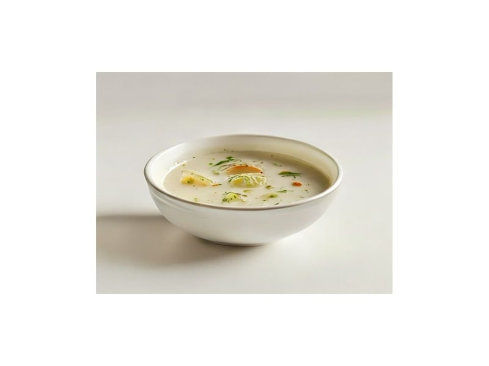

Zupy
Zupa cebulowa
Zupa cebulowa: 3 g białka, 55 kcal, 7 g węglowodanów i 2 g tłuszczu na 100 g. Kategoria: Zupy.
Kalorie55 kcalna 100 g
Białko / proteiny3 g
Węglowodany7 g
Tłuszcz2 g
Cena (szac.)~1,34 złza 100 g
Ceny zaktualizowano: maj 2026 (szacunek — ceny w popularnych supermarketach)
Porcja: miska (350g)
| Kalorie | 193 kcal |
|---|---|
| Białko | 10.5 g |
| Węglowodany | 24.5 g |
| Tłuszcz | 7 g |
| Cena (szac.) | ~4,69 zł |
Szczegółowe składniki odżywcze na 100 g
| Wartość energetyczna (kalorie) | 55 kcal |
|---|---|
| Białko (proteiny) | 3 g |
| Węglowodany | 7 g |
| Tłuszcz | 2 g |
| Tłuszcze nasycone | 1.2 g |
| Tłuszcze nienasycone | 0.8 g |
| Witaminy i minerały | Potas, Witamina C, Żelazo |
| Współczynnik kcal / 1 g białka | 18.3 |
| Cena produktu (szac. za 100 g) | ~1,34 zł |
| Cena za 100 g białka (szac.) | ~44,67 zł |